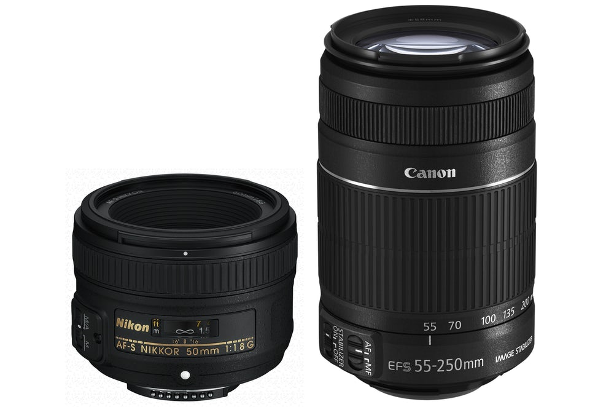
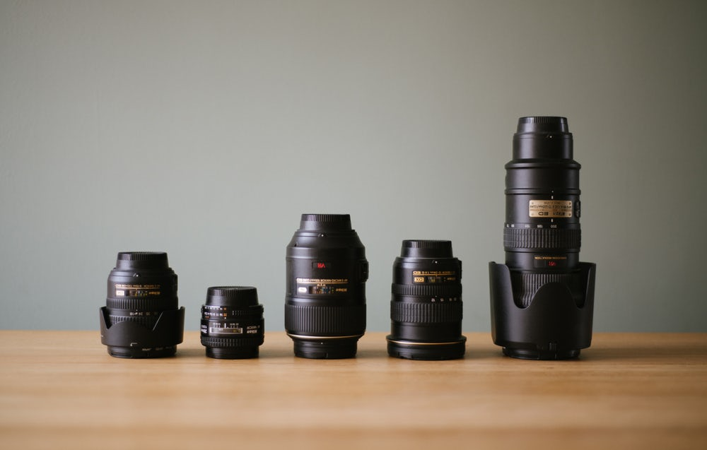

Lenses
A camera lens (also known as photographic lens or photographic objective) is an optical lens or assembly of lenses used in conjunction with a camera body and mechanism to make images of objects either on photographic film or on other media capable of storing an image chemically or electronically.

Here are some popular types of lenses and their benefits: Ultra-wide angle: Capture a wide field of view to get an entire landscape into your shot. Telephoto: An 80mm–100mm or higher lens brings distant objects closer. Macro: Get close to small objects while staying in crystal-clear focus with the right macro lens.
A camera lens is an optical lens or assembly of lenses used in conjunction with a camera body and mechanism to make images of objects either on photographic film or on other media capable of storing an image chemically or electronically. There is no major difference in principle between a lens used for a still camera,
...With the right lens, perfect photos are at your fingertips. Adorama stocks a wide range of camera lenses to suit any scenario from fast-paced sports events to formal portraiture and everything in-between. Not sure what you're looking for? See our Learning Center and AdoramaTV. We are authorized dealers of Nikon, Canon, ...  Despite buying cameras which have been specifically designed to take and make use of different lenses, a large number of photographers only ever use the kit lens that their DSLR or interchangeable lens camera came with. But it's really not that surprising, picking the right next lens can be daunting, which is why we're going to try to help with our guide to life after the kit lens. Lenses are arguably the most important part of your camera set-up, they make or break your pictures. They control the image that's projected onto your imaging sensor, and ultimately what photos you are taking home. As such, many photographers would prefer to shoot with an okay camera and a great lens, than a great camera with ho-hum glass attached. But knowing the importance of good glass is one thing, it's another to know what lens will give you the creative freedom to capture the photos you want to get. To the uninitiated, lenses are baffling tubes of glass with numbers and confusing acronyms printed on the side. Hopefully, this guide will help you understand which lenses can be used to achieve what, why others can cost more than a family car … and how there are some sub $150 bargains which could change your photography forever.